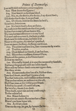
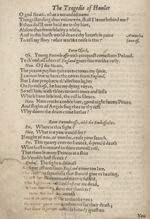

Ending with the beginning
Another possibility is that the printers brought the beginning and the end of the job together on one sheet. Printing these two parts of the text together would have been an efficient use of labor and paper. In that case, this is what the printed sheet would have looked like. After printing all the remaining pages, the printers would have cut the sheet in half. One half sheet would become the last of the gatherings, signed O. The other half sheet would become the title page and put at the very beginning as the implied gathering A. Neither of the possibilities illustrated here addresses what became of the blank leaf, if there was one.





Blank
[A]1r
O1v
O2r
[A]1v
Blank
O2v
O1r
The full description of the play on the title page also advertised it. In itself, that is a reason not to add the protective blank pages. Whatever the printers decided in this case, they were always negotiating the cost of paper and the demands of advertising in London.